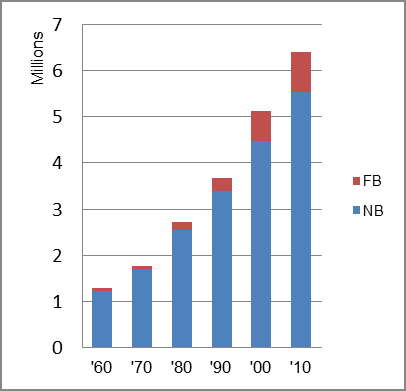

The foreign-born (FB) population increased from 70,318 in 1960 to 856,663 in 2010. That was an increase of 1118.3 percent. The foreign-born share changed from 5.4 percent to 13.4 percent.
The share of the overall population that was native-born (NB) increased by 349.4 percent.
Arizona: Population 1960-2010 
The first chart below shows the three population change factors for three periods adjusted for annual average amounts. Until the most recent period, domestic migration (NDM) was the largest factor in population change. In the most recent period, B-D became the largest factor.
The second chart shows the same data but with an adjustment to reflect births to immigrants shifted to NIM. In it, net immigration (NIM) became the largest factor in the most recent period.
Arizona: Sources of Population Change 1990-2013 Arizona: Sources of Population Change (Adjusted) 1990-2013
B-D NDM NIM B-D NDM NIM 90-'99 34.2% 55.6% 10.3% 90-'99 24.9% 55.6% 19.5% 00-'09 32.0% 49.2% 18.8% 00-'09 20.3% 49.2% 30.5% 10-'13 52.5% 32.4% 15.1% 10-'13 28.6% 32.4% 39.1%